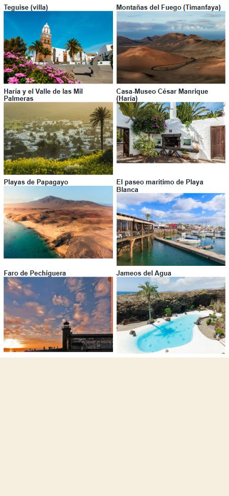

Producción (bengaladesigns.vercel.app), tamaño iPhone. Las 8 paradas del viaje de Eric que más fallaban, con la foto que el servidor da ahora a un viaje creado antes: Timanfaya con su volcán, Haría con el pueblo y las palmeras (no el mapa), la Casa-Museo con su patio, las dos de Papagayo separadas.
